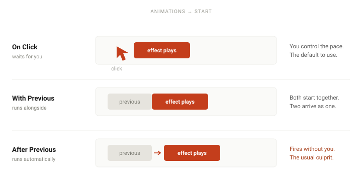

To add animation in PowerPoint: select the object, open the Animations tab, and pick an effect from Entrance, Emphasis, Exit or Motion Paths. Then set the Start dropdown to control when it runs — On Click, With Previous, or After Previous. That dropdown causes more confusion than everything else on the tab combined.
Animation is the feature most likely to make a good presentation worse. Used well it directs attention to exactly what you are talking about; used badly it turns a business deck into a fireworks display. This guide covers both the mechanics and the judgment — the mechanics take five minutes to learn, the judgment is what actually matters.
Step by step
-
Select the object you want to animate
Click the object on the slide — a picture, a shape, a chart, or a text box. Click near its border rather than in the middle: clicking the middle of a text box puts you inside the text, and animations apply to the object, not to your cursor position.
Animating several objects as one? Press Ctrl and select each one, then use Shape Format → Group → Group and animate the group. A group takes a single effect, so its parts move together.
-
Open the Animations tab
The Animations tab is always on the ribbon, but everything on it acts on the selected object — so select the thing you want to animate first. It shows a gallery of effects plus the controls — Start, Duration, Delay — that sit to the right of it.
Do not confuse this with the Transitions tab next to it. Transitions move between slides; animations act on objects inside a slide. Mixing them up is the single most common source of confusion for beginners.
-
Choose an effect
Effects come in four families, and picking the right family is most of the decision:
Entrance — the object appears. Appear, Fade, Fly In, Zoom.
Emphasis — the object is already visible and you want attention on it. Pulse, Grow/Shrink, Spin.
Exit — the object leaves. Disappear, Fade.
Motion Paths — the object travels along a line or curve you draw.The gallery shows a handful of each. Click More Entrance Effects (or the equivalent for the other families) to see the full list.
For 90% of business presentations, the only effects worth using are Appear and Fade. They direct attention without performing.
-
Set when it starts — the setting that matters most
Look at the Start dropdown on the right of the Animations tab. Every animation is in one of three states:
On Click — waits for you to click. This is the one you want most of the time, because it puts you in control of the pace.
With Previous — runs at the same time as the previous effect. Use it to bring in several objects together.
After Previous — runs automatically once the previous effect finishes. Useful for a sequence you want to run hands-free, and the usual culprit when something fires before you are ready to talk about it.Animation firing too early? Nine times out of ten it is set to After Previous when you meant On Click.

The same effect, three different triggers. Changing nothing but this dropdown is what fixes most animation timing problems. -
Adjust Duration and Delay
Duration is how long the effect takes to play. Delay is a pause before it begins.
Keep durations short. Half a second is right for most entrance effects; anything over a second starts to feel sluggish, and an audience notices the wait even if they cannot say why. If you need an object to appear a beat after another, use Delay rather than a longer Duration.
-
Reveal bullet points one at a time
This is the most useful animation in existence and it is buried one level down. Select the text placeholder containing your bullets, apply Appear or Fade from the Entrance family, then click Effect Options and choose By Paragraph.
Set Start → On Click. Now each bullet appears on its own click, so you can talk about one point at a time while the rest of the list stays hidden — the audience reads what you are saying instead of jumping ahead.
Related: By Paragraph is what reveals the bullets one at a time. Dimming the earlier ones afterwards is a separate setting — and it switches them to a dimmed colour rather than fading them out.
-
Manage the order with the Animation Pane
Once a slide has more than two effects, use the Animation Pane (Animations → Animation Pane). It lists every effect on the slide in the order they run, with their start settings.
Drag entries to reorder them. To remove one, select it and press Delete; to remove several, hold Ctrl as you select each. For the detailed settings, select the arrow next to the effect and choose Effect Options. When a slide's timing has gone wrong in a way you cannot explain, this pane is where you find the reason.
-
Test it in Slide Show mode
Press F5 and click through the slide.
Nothing runs on its own in the editing view. This trips up almost everyone — you apply Fade, nothing happens, and you assume it failed. Choose Play From on the Animations tab to preview it in place, or press F5 before concluding anything is broken.
Three rules for using animation well
Knowing the mechanics is easy. These are the rules that keep animation from working against you.
- Motion should direct attention, not decorate it Before adding an effect, answer one question: what should the audience be looking at when this runs? If there is no answer, delete the animation.
- One style for the whole deck Pick one entrance effect and use it everywhere. A deck where the title flies in, the chart zooms, and the bullets spin reads as a demo reel rather than a presentation.
- The audience should never wait for an animation If someone has to sit through a two-second spin before you can make your point, the animation is costing you attention every single time. Duration under half a second, always.
When it does not work
- Nothing happens when I test it You are probably in the editing view, where nothing runs on its own. Press F5 or click Slide Show → From Current Slide to run it properly, or use Play From on the Animations tab to check a single effect without leaving the slide.
- The animation fires before I am ready to talk about it Open the Animation Pane and look at the Start setting for that effect. It is almost certainly on After Previous or With Previous. Change it to On Click.
- Bullets all appear at once instead of one at a time You have applied the animation to the text box but not told it to split by bullet. Click the placeholder, open Effect Options, and choose By Paragraph. If By Paragraph is greyed out, you may have applied the animation to a shape rather than a text placeholder.
- I cannot remove an animation Select the object and click None — the first item in the Animations gallery. If you cannot tell which object owns the effect, open the Animation Pane, click the entry, and PowerPoint will highlight the corresponding object on the slide.
- The animation looks different on another computer Usually font substitution changing where text sits, or a different PowerPoint version rendering the effect at a different speed. If the presentation matters, run it on the actual machine beforehand — this applies to animation more than any other PowerPoint feature.
Frequently asked questions
- What is the difference between an animation and a transition?
- A transition plays between slides and applies to the whole slide — you find those on the Transitions tab. An animation plays on an object within a slide, like a bullet point appearing on a click, and lives on the Animations tab.
- How do I animate bullet points one at a time?
- Select the text placeholder, apply an Entrance effect such as Appear or Fade, then open Effect Options → By Paragraph and set Start → On Click. Each bullet then appears on its own click. You can also have the earlier bullets dim to grey as the next one arrives — that is a separate setting from By Paragraph.
- How do I remove an animation in PowerPoint?
- Select the object and click None in the Animations gallery. To clear an entire slide, open the Animation Pane, select the first entry, hold Shift and select the last, then press Delete. There is no one-step way to strip every animation from a whole deck — Microsoft's own guidance is that you remove them object by object. What you can do deck-wide is switch animation off entirely, under Slide Show → Set Up Slide Show.
- Why is my animation not playing in the slideshow?
- Confirm you are in Slide Show mode, since nothing plays on its own in the editing view. Then check the Start setting, and make sure Show without animation is not ticked in the Slide Show → Set Up Slide Show dialog — that setting silently disables every animation in the deck.
- Can I add animations in the free PowerPoint web app?
- Partially. The web app covers basic Entrance, Emphasis and Exit effects, but Motion Paths and some advanced options are desktop-only. Animations you create on the desktop will generally display correctly when the deck is played in the web app.
Official references
- Animate text or objects Effects, the Start settings and the Animation Pane.